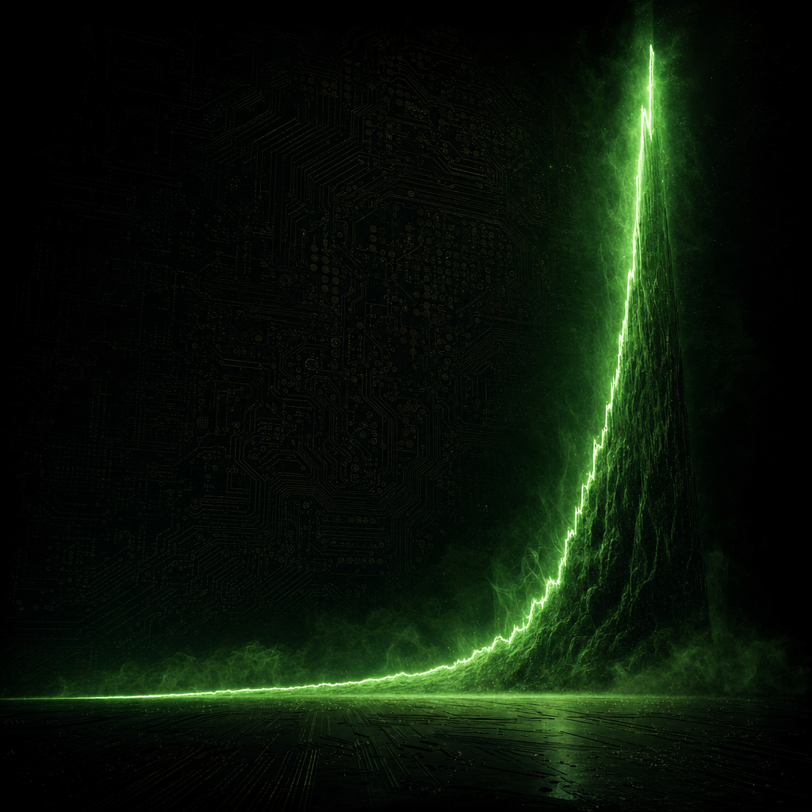

NVIDIA's revenue grew 61× and its profit 474× in fifteen fiscal years. Almost all of it happened in the last three. Here is the AI-era explosion as the audited numbers actually tell it.
For most of the past fifteen years, NVIDIA was a company whose revenue barely moved. From the fiscal year ending January 2011 to the one ending January 2026, annual revenue rose from $3.54 billion to $215.94 billion — a 61-fold increase. But that figure flattens the truth. The growth was not a smooth exponential. It was a flat decade followed by a near-vertical cliff.
The cliff has a precise edge. The fiscal year ending January 2023 was essentially flat — revenue of $26.97 billion, up just 0.2%. The very next year it more than doubled to $60.92 billion, up 125.9%. Then it kept climbing: $130.50 billion, then $215.94 billion. Revenue grew 3.5× in the two years after the flat year.
This is the same company founded over a Denny's breakfast in 1993 to make graphics chips for video games. The earliest years in this data — revenue stuck between $3.5 and $5 billion — are that gaming-era NVIDIA, before data center became the business that mattered.
It is easy to forget that right before the explosion, NVIDIA had a bad year. In the fiscal year ending January 2023, gaming revenue fell about 27% amid a post-crypto-mining glut, and net margin collapsed from 36.2% to 16.2% — the worst in this entire window. That V-shaped dip is the visible scar of the year before the boom.
Then the hinge turned. In the fiscal year ending January 2024, total revenue jumped 125.9% as hyperscalers raced to buy Hopper H100 GPUs to train large language models; NVIDIA reported data center revenue up 427% that year. The flat year and the explosion sit directly next to each other in the data.
As revenue exploded, profitability followed it up a staircase. Gross margin, which spent the early 2020s in the low 60s, jumped to a new tier in the boom years: 72.7%, 75.0%, and 71.1% in the fiscal years ending 2024 through 2026 — all above 70%.
Net margin is the more violent line. It peaked at 36.2% in FY-end 2022, cratered to 16.2% in the flat FY-end 2023 year, then snapped back to 48.9% and peaked at 55.9%. By FY-end 2025, NVIDIA was keeping more than 55 cents of every revenue dollar as profit.
Put revenue and margins together and you get the number that really matters. Net income — the profit figure that is immune to stock splits — grew from $0.25 billion in FY-end 2011 to $120.07 billion in FY-end 2026. That is a 474-fold increase, even steeper than revenue, because margins expanded at the same time.
The acceleration is brutal in the boom window: profit went from $4.37 billion (FY-end 2023) to $29.76 billion, then $72.88 billion, then $120.07 billion. NVIDIA went from earning a quarter of a billion dollars a year to earning more than $120 billion.
Here is the number that fools people. Reported diluted earnings per share appear to crash from $11.93 in FY-end 2024 to $2.94 in FY-end 2025 — a 75% drop — in the very same window that net income rose from $29.76 billion to $72.88 billion.
The reason is mechanical: NVIDIA did a 10-for-1 stock split in June 2024, and the SEC reports EPS exactly as filed, with no split adjustment. Divide the old $11.93 by ten and you get $1.19 — so the actual reported $2.94 is more than double. The "crash" is a doubling in disguise. Plot raw EPS against the split-adjusted share price and you would see a fake collapse; net income is the only honest series.
The split-adjusted share price tells the same flat-then-vertical story. Joined to each fiscal close date — the correct way to line prices up with NVIDIA's late-January fiscal year — the stock rose from 54 cents to $187.66, a 348-fold increase. At the fiscal close in early 2024 the price and the revenue figure nearly touched: $60.99 a share against $60.92 billion in sales.
And the market tracked the fundamentals almost perfectly: the correlation between net income and price is 0.991, between revenue and price 0.992. This is not a detached bubble — investors were pricing real, auditable earnings. On October 29, 2025, that pricing made NVIDIA the first company ever worth $5 trillion.
A 0.99 correlation makes it sound like price simply followed sales. It did not — not one for one. Index both series to FY-end 2011 and the gap is stark: by FY-end 2026 the revenue index sits at 6,094 while the price index reaches 34,752. Price compounded more than five times faster than revenue off the same base.
The market did not just reward NVIDIA for selling more; it paid a far richer multiple on every dollar of those sales. Fundamentals and price moved together — but the lens the market viewed each sales dollar through expanded enormously as NVIDIA became the indispensable supplier of AI compute.
None of this was a smooth ride. NVIDIA's best calendar year was 2023 at +239% — the market front-running the boom before it showed up in the financials — but 2022 was -50% and 2018 was -31%. The stock didn't climb gently; it lurched violently upward.
One last tell of how extreme the operating leverage became: NVIDIA now spends a record $18.5 billion a year on R&D, more than ever in dollars — yet that is just 8.6% of revenue, down from a peak of 32%. The company is investing more than ever while revenue outruns it so fast that R&D intensity has more than halved.
A flat decade, a bad year, a hinge, an explosion, and a market that saw it coming. The AI revenue boom is the rare market story that the numbers actually justify — and then some.
yfinance package, split- and dividend-adjusted.